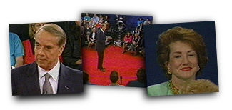

Debates '96
2nd Presidential
Debate
October 16, 1996 - San Diego, California

Bob
Dole's Opening Statement
Thank you very much, Jim. Let me first give you a sports update.
The Braves 1, Cardinals nothing, early on.
I want to thank you, and I want to thank everybody here tonight.
And I want a special thanks to my wife, Elizabeth, my daughter,
Robin, for their love and support, and thank the people who are
listening or watching all over America.
In twenty days, you will decide who will lead this country into
the next century. It's an awesome responsibility, and you must
ask yourself, do you know enough about the candidates? You should
know as much as possible about each of us.
Sometimes the views have been distorted, and millions and
millions of dollars in negative advertising have been spent
distorting my views. But I hope tonight you'll get a better feel
of who Bob Dole is and what he's all about.
But I think first, I should understand what the question on your
mind is, do I understand your problem? But I understand that if
it occurred to me, and I might just say that I'm from a large
family. I got lots of relatives. And they're good, average
middle-class, hard-working Americans. They live all across the
country. They're not all Republicans. Maybe all but one.
But in any event, I understand the problems. Whether it's two
parents working because one has to pay the taxes and one has to
provide for the family, whether it's a single parent who just
barely pays the pressing bills, or whether you're worried about
an education for your children, going to the best schools, or
whether you're worried about safe playgrounds, drug-free schools,
or crime-free schools.
This is what this election is all about.
And hopefully tonight when we conclude this debate, you will have
a better understanding, and the viewing and listening audience
will have a better understanding.
Thank you.
Bob
Dole's Closing Statement
Well, let me thank everybody here at the
university and Jim, thank you and all the people who may still be
watching or viewing.
This is what it's all about. It's not about me. It's not about
President Clinton. It's about the process. It's about selecting
the President of the United States.
So, we have our differences. We should have our differences.
Mentioned other parties. They have their differences. If we all
agreed it'd be a pretty dull place. We should have more debates.
Maybe we'll have another debate on the economy.
But I would just say this - This is the highest
honor that I've ever had in my life. To think that somebody from
Russell, Kansas, somebody who grew up living in a basement
apartment, somebody whose parents didn't finish high school,
somebody who spent about 39 months in hospitals after World War
II, somebody who uses a button hook everyday to get dressed,
somebody who understands that there are real Americans out there
with real problems, whether they're soccer moms, or the single
parents or families working with seniors or people with
disabilities, whoever it may be - but there are some very
fundamental differences in this campaign.
President Clinton opposes term limits. President Clinton opposes
a constitutional amendment to balance the budget. President
Clinton opposes a voluntary prayer amendment. He opposes an
amendment to protect the flag of the United States of America.
People give their lives - a couple of servicemen here, they
sacrifice. They give everything for America. We ought to protect
the American flag with a constitutional amendment. But beyond
that, we need to address the economy.
And I would just save my time, I'm running out here. It's a very
proud moment for me. And what I want the voters to do is to make
a decision. And I want them to be proud of their vote in the
years ahead, proud that they voted for the right candidate, proud
that they voted, hopefully, for me.
And I'll just make you one promise. My word is good. Democrat and
Republican groups have said Bob Dole's word is good. I keep my
word. I promise you the economy is going to get better. We're
going to have a good economic package and we're going into the
next century a better America.
Thank you.
Vice Presidential
Debate
October 9, 1996 - St. Petersburg, Florida
Jack Kemp's Closing Statement
Thank you, Jim. And thanks to the people of St. Petersburg for
fantastic hospitality, and my friend, Al Gore, for a vigorous
debate.
I think this is the most exciting time in the history of the
world to be alive. We have lived through what Jean Kirkpatrick
called the bloodiest century in mankind's history. We have
defeated, in this system of ours, fascism, Naziism, communism,
socialism is defunct or debunked around the world, the evil of
apartheid has ended. There's only one last question remaining for
the next century, indeed, the next millennium - Can we in America
make the world's greatest liberal democracy, this democratic
experiment in private property, limited government, the rule of
law, respect for families and traditional Judeo-Christian values
work so it can be a blessing to our country and a blessing to the
rest of the world?
With all due respect to this administration, they've got a
foreign policy in disarray. They have a lack of credibility
around the world. Weakness, as I said earlier is provocative, and
clearly this economy is not performing up to the standards that
we would expect from this great nation going into the most
exciting global economy the world has ever known.
There's something amiss. Our culture seems to be weakening all
around us. Families are under tremendous pressure. People do not
feel safe in their homes. A mother doesn't feel safe sending her
child to school. Our schools are not educating. It's not the
problem of the teachers - they are overworked, and my daughter
will tell you they're underpaid. And we know that. They need to
be empowered.
We need to reform education. We need to reform welfare. We need
to reform litigation and regulation. And we certainly need to
reform this tax code that is a product of this terrible century
of war and recession and inflation.
It can be done. We need somebody who understands the potential of
the American people, that we're not just doing well for
ourselves, we need to do well for the rest of the world because
they're looking at us and we need to make it work in every
neighborhood and community in America and for every family so
that no one, as Bob Dole said in his San Diego acceptance speech,
is left behind.
Bob Dole, as I said earlier, is a man of courage, a man of
principles, a man who crawled out of a foxhole in 1945 to save a
wounded brethren.
The Bible says, "No greater love hath a man than he give his
life." Well Bob did, just about. He's been through the valley of
the shadow, and he, as commander-in-chief can take this country
with the courage of Churchill, the principles of Lincoln, and the
indefatigable optimism and spirit that this nation expects from
its commander-in-chief and the next President of the United
States, Bob Dole.
1st Presidential
Debate
October 6, 1996 - Hartford, Connecticut
Bob Dole's Opening Statement
Thank you, Mr. President for those kind words. And I thank the people of Hartford, the Commission, and all those who out there who may be listening or watching.
It's a great honor for me to be here, standing here as the Republican nominee. I'm very proud to be the Republican nominee, reaching out to Democrats and Independents. I have three very special people with me: my wife Elizabeth, my daughter Robin, who have never let me down; and a fellow named Frank Carafa, from New York, along with Ollie Manenan, who helped me out in the mountains of Italy a few years back. I've learned from them that people do have tough times, and sometimes you can't go it alone. And that's what America is all about.
I remember getting my future back from doctors and nurses, and a doctor in Chicago named Dr. Kelikian. And ever since that time, I've tried to give something back to my country, to the people who are watching us tonight.
America is the greatest place on the face of the earth. Now I know millions of you still have anxieties. You work harder and harder to make ends meet and put food on the table. You worry about the quality and the safety of your children - the quality of education. But even more importantly, you worry about the future, and will they have the same opportunities that you and I have had.
Jack Kemp and I want to share with you our ideas tonight. Jack Kemp is my running mate and he's doing an outstanding job.
Now, I'm a plain-speaking man, and I learned long ago that your word was your bond. And I promise you tonight that I'll try to address your concerns and not try to exploit them. It's a tall order, but I've been running against the odds for a long time. And again, I'm honored to be here this evening.
Bob Dole's Closing Statement
Thank you, Jim. Thank you, Mr. President. Thanks to everyone for watching and listening. I want to address my remarks to the young people of America, because they're the ones who are going to spend most of their life in the 21st century. They are the ones who have the challenges, and there are people out there making predictions that it's not going to be the same, you're not going to have the same opportunity, it's going to be more deficits, more drugs, more crime, and less confidence in the American people. And that's what you're faced with, what parents are faced with and what grandparents are faced with.
It's important. It's their future. And I would say to those - I know there are more young people experimenting with drugs today than ever before, drug use has gone up. If you care about the future of America, if you care about your future, just don't do it.
And I know that I am someone older than you, but I've had my anxious moments in my life. I've learned to feed myself and to walk and to dress, and I'm standing here as proof that in America the possibilities are unlimited. I know who I am and I know where I'm from, and I know where I want to take America.
We are the greatest country on the face of the earth. We do more good things for more people in our communities, our neighborhoods, than anywhere that I know of.
This is important business - this election is important. I ask for your support, I ask for your help. And if you really want to get involved, just tap into my home page at www.dolekemp96.org.
Thank you and God bless America.

More opportunities. Smaller government. Stronger and safer families
Homepage | Register | Volunteers | Donations
About the Team | Dole Interactive | Newsroom | The Dole Agenda | On the Campaign Trail | Get Involved
Originally Paid for by Dole Kemp '96 Campaign Committee
Original Web Design by Presage Internet Campaigns
To Learn more about Bob Dole, Please Visit the Dole Institute
This Web Site is Presented for Educational Purposes by 4President.org